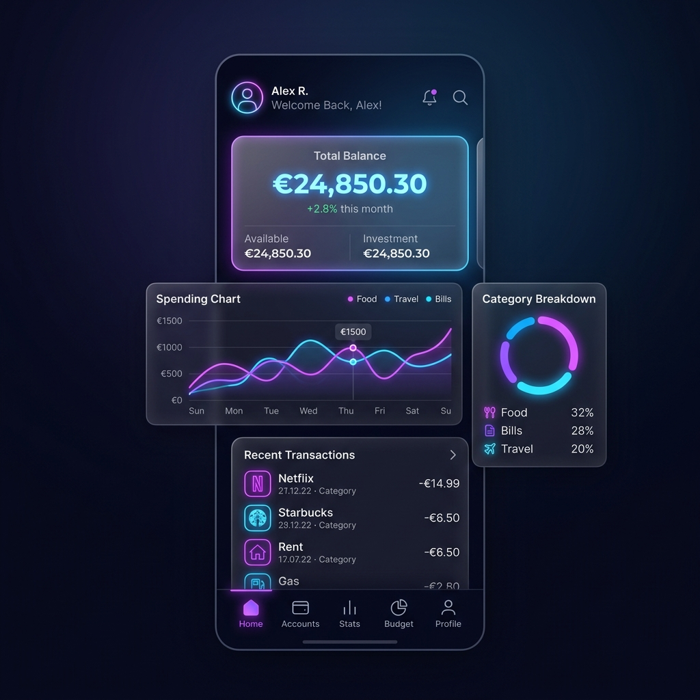
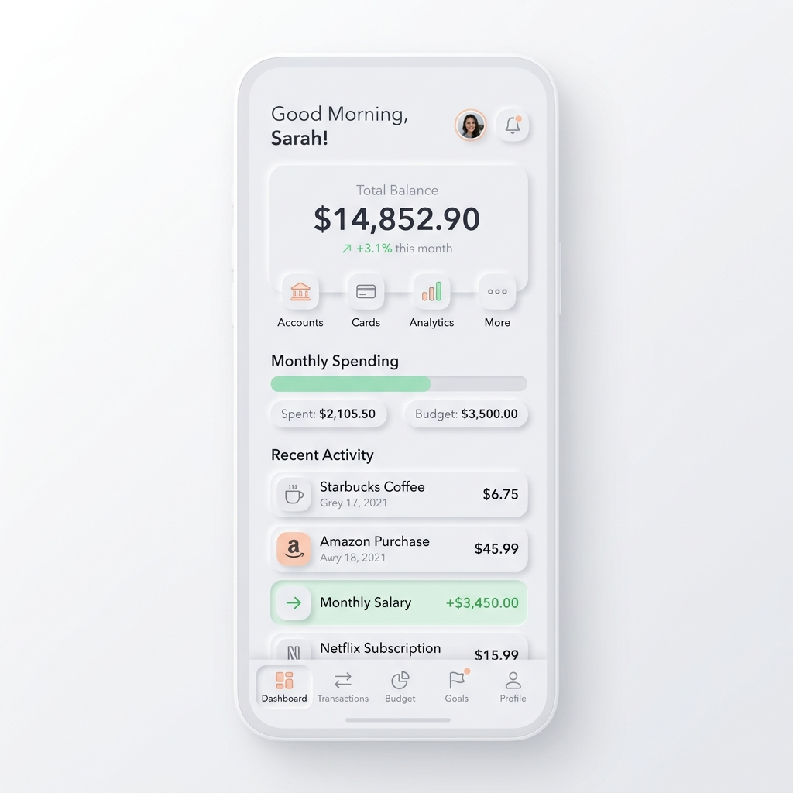
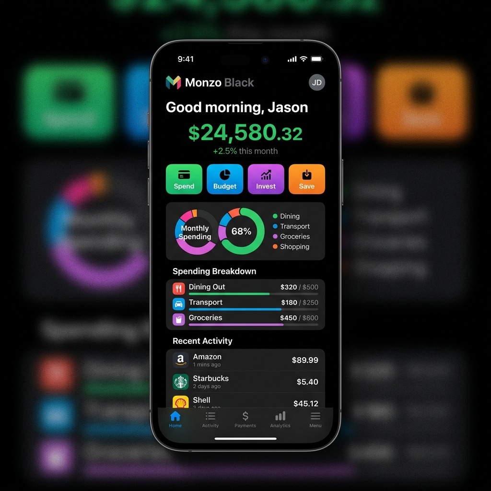
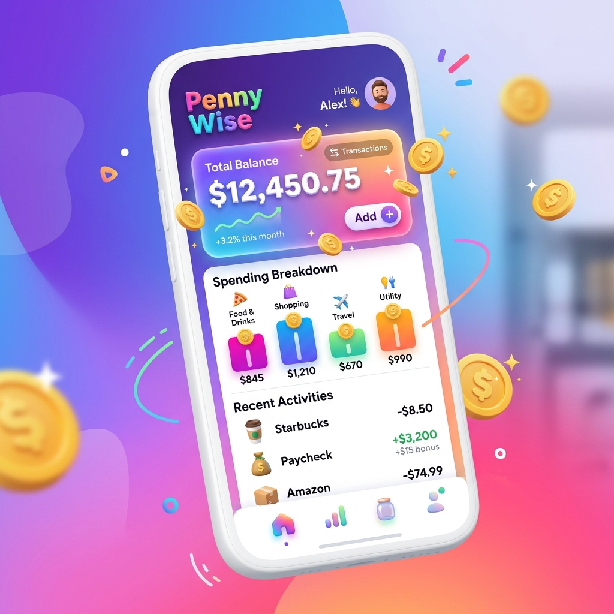
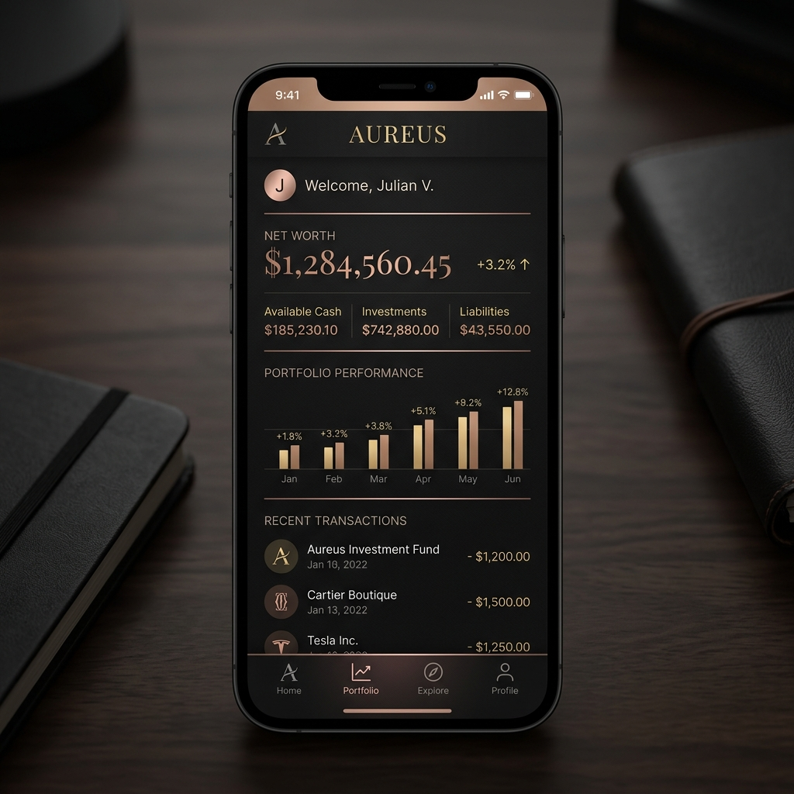
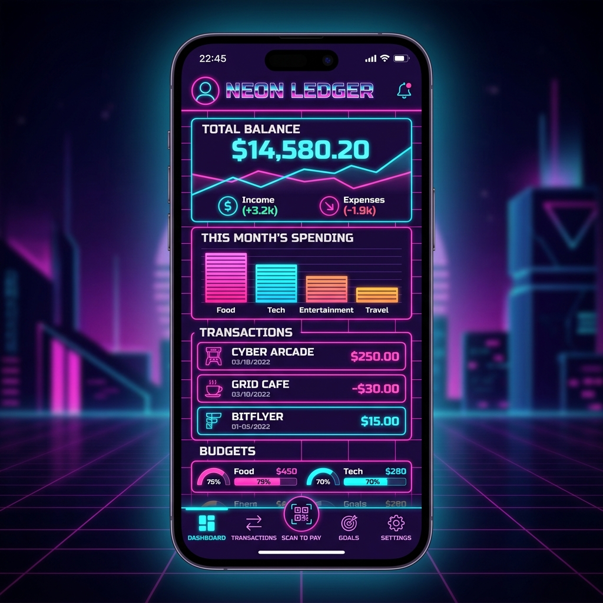
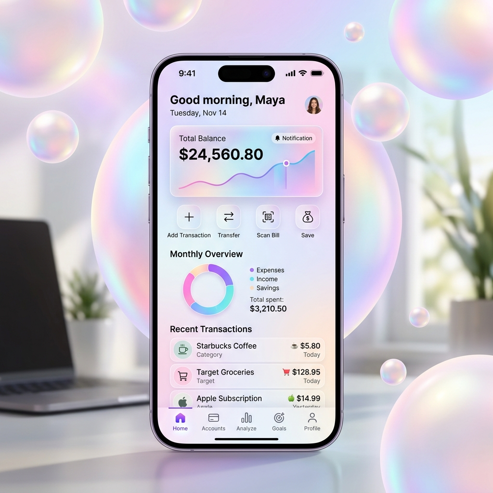
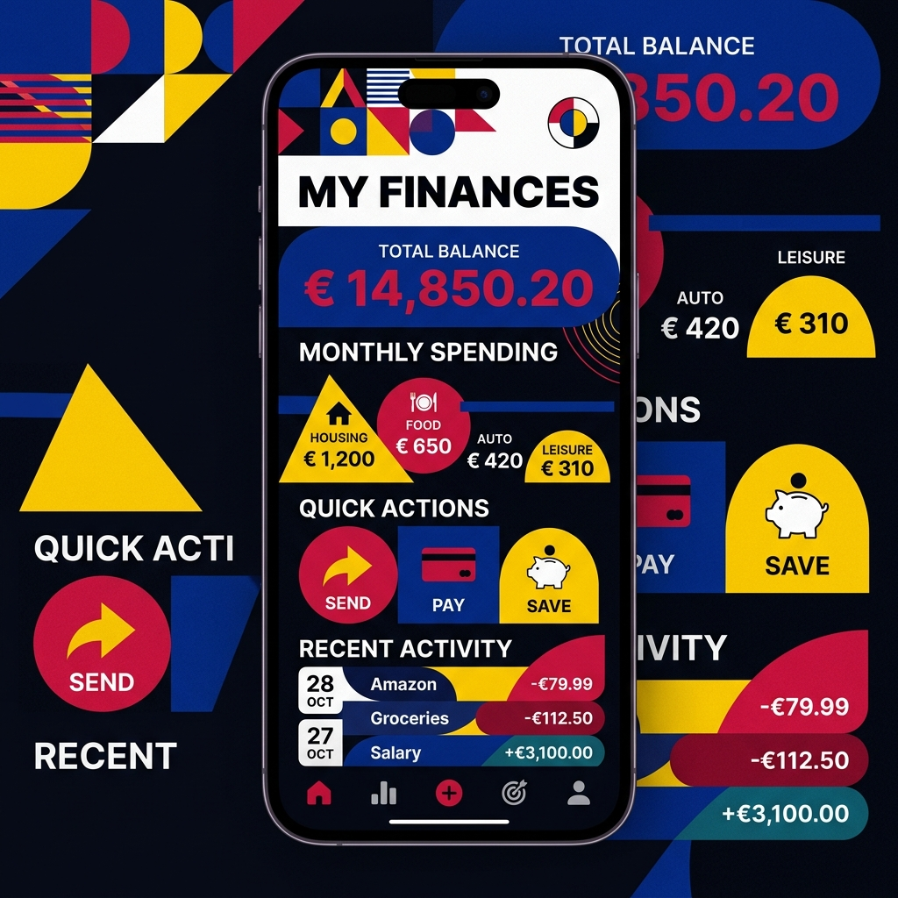
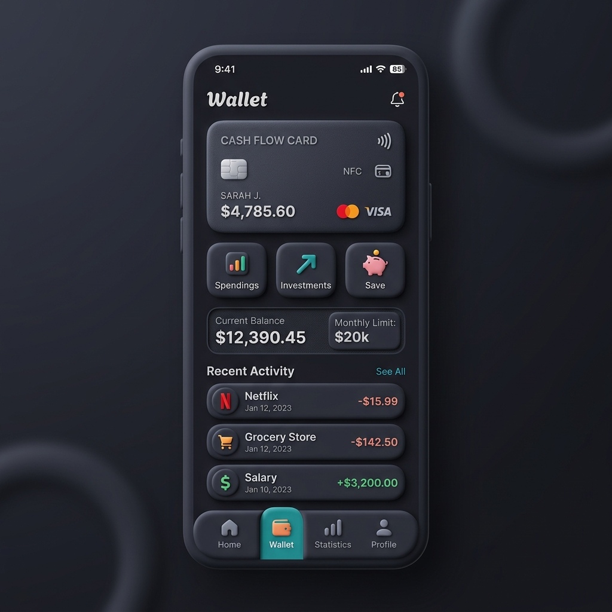
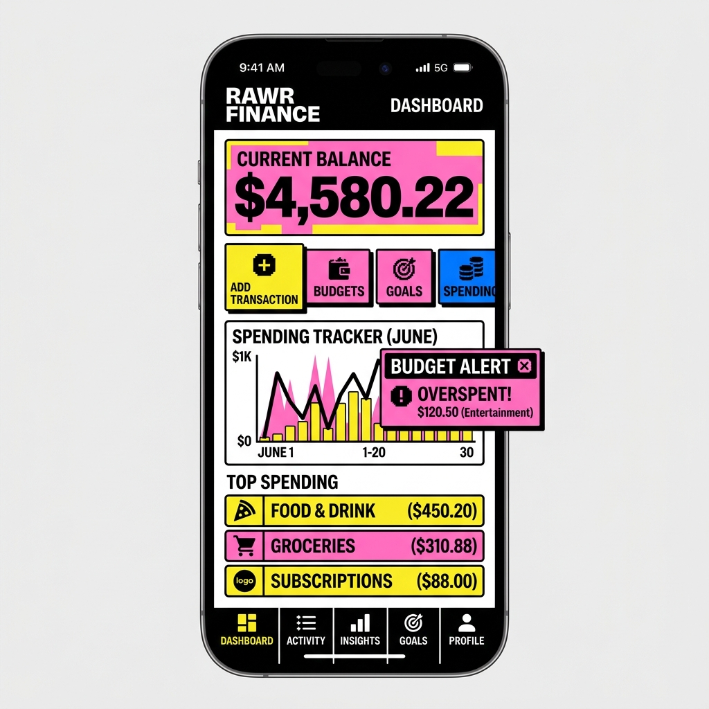

Telegram Web App uchun maxsus tayyorlangan 5 xil noyob va zamonaviy UI loyihalari. Qaysi uslubni tanlasangiz, loyihani o'sha yo'nalishda davom ettiramiz!

Yarim shaffof oyna effektlari (frosted glass), yorqin neon binafsharang va ko'k aktsentlar. Cyberpunk va texnologik vibe.

Toza, oppoq va och kulrang tonlar, yumshoq soyalar. Klassik, sokin moliya ilovalarini yoqtiruvchilar uchun ideal.

Keskin kontrastli OLED qora fon, juda katta zamonaviy shriftlar va yorqin ranglar. Haqiqiy premium tuyg'usi.

Silliq gradientlar, 3D tangalar va elementlar. Juda quvnoq, interaktiv va hozirgi kun yoshlarining eng sevimli trendi.

Tim qora fon va oqlangan zarhalli (oltin, pushti-oltin) elementlar. V.I.P klass va elit dizayn izlovchilar uchun.

80-yillar retro estetikasi. To'q binafsha fon, neon pushti va zangori to'rli (grid) liniyalar bilan zamonaviy futuristik ko'rinish.

Marvarid va golografik turlanuvchi ranglar. Nozik, toza va estetik shisha panellari, o'ta nafis premium uslub.

Bauhaus uslubida o'tkir geometrik shakllar va keskin kontrastli ranglar (chuqur ko'k, yorqin sariq). Haqiqiy zamonaviy san'at asari.

Matte va yumshoq yumaloq 3D elementlar. "Plastilin" (clay) kabi teginishga yoqimli va o'ziga xos avangart dizayn.

Qalin qora ramkalar (borders), keskin va qo'pol dizayn elementlari. Zamonaviy Fintech va kripto loyihalarining trendi.
Menga qaysi raqamdagi (yoki uslubdagi) dizaynni tanlaganingizni yozib yuboring.
Misol: "3-ustun (Apple Clean) asos bo'lsin" yoki "1 va 5 aralashmasi".